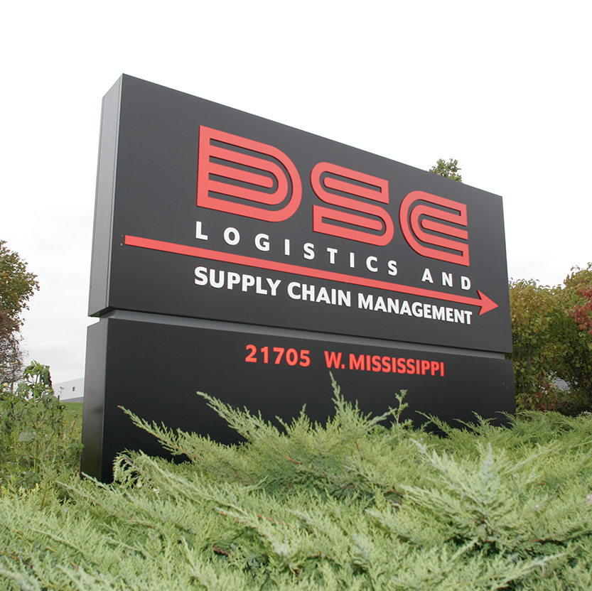

About me

I recently started working as a software developer at Groupon. In 2014, I graduated from Northwestern University with a B.S. in Computer Science.
Research experience
I am interested in a wide range of topics in computer systems research. My current research is focused on distributed systems and networking. In 2013, I began working with Northwestern's AquaLab, under Prof. Fabian E. Bustamante.
P u b l i c a t i o n s
A cliq of content curators
Appeared as poster at ACM SIGCOMM 2014
Received best undergraduate poster award
P r o j e c t s
cliq: A distributed content curator
We design and implement cliq, a distributed content curator. We design and build cliq, a fullly decentralized social news site. Unlike other media, social news depends on users to upload content, vote, and ultimately determine what content is news. However, we observe that centralized architectures of exisiting curators lead to potential content bias and data aggregation of users. This is particularly damaging to the “Web democracy” that social news sites try to provide. The goal of cliq is to provide a social news site that is resilient to both issues. Our second contribution is a large-scale analysis of reddit, used to inform our design of cliq.
Collateral damage of Internet censorship
Many ISPs and governments choose to apply Internet censorship to certain networks. However, external traffic routed through these networks may be censored incidentally. We attempt to detect and measure the collateral damage caused by a variety of censorship methods. We implement an endhost application to detect Internet censorship and must determine the cases that are due to collateral censorship.
A w a r d s
ACM Student Research Competition
Best undergraduate poster at ACM SIGCOMM 2014.
Will compete in grand finals after all semifinalists are chosen.
Professional experience
-
Groupon
Software engineer
As a part of Optimize team, my teammates and I are responsible for Groupon's AB testing platform. This includes deploying experiments, tracking results and processing and analyzing them in real time. I've used web technologies including Coffeescript, Node.js, Ruby and Ember and am gaining familiarity with backend technologies including Clojure, Kafka, Storm and Hadoop.
Aug. 2014 - current
-
Northwestern University
Undergraduate research assistant
I conducted independent research projects in Aqualab under Prof. Fabian E.Bustamante. AquaLab specializes in distributed systems and networking research.
Sept. 2013 - Aug. 2014
-
Amazon
Software developer intern
As a part of the Optimization team, I designed and implemented data visualization tool for click stream data. The server was built using python and the data was visualized using web tools, D3.js and Amcharts.js.
Jul - Sept 2013
-

DSC Logistics
Software developer intern
I was invoved with the design and implemenation of a new employee intranet. Here, I learned the basics of web programming and began exploring UX design.
Jul - Sept 2012